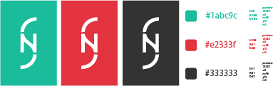
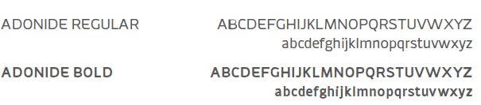
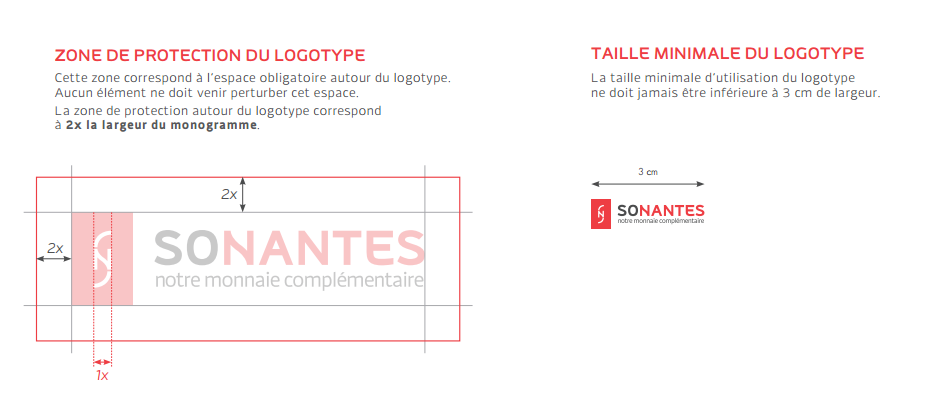

couleur > les teintes de bleu et rouge du logo reflètent la dimension de confiance, de fluidité et dynamisme associés aux valeurs de SoNantes. ces couleurs sont aisément déclinables sur tous types de supports mais son utilisation est à privilégier sur fond blanc ou claire. Le logotype en couleurs est disponible : - en quadrichromie (cmjm) et en pantone pour les supports d’impression ; - en rvb pour les supports informatiques et vidéos
le logo rouge sera utilisé pour la communication institutionnelle
le logo bleu sera utilisé pour dans les autres cas
noir > lorsqu’il est impossible pour des raisons techniques ou économiques d’utiliser la version en couleur du sigle (ex. : télécopies, marquage d’objets, etc.), il sera de mise d’utiliser cette version monochrome déclinable sur d’autres teintes. le sigle pourra également servir de gabarit pour un embossage, un gaufrage, un marquage ou une forme de découpe

l’univers typographique poursuit le même objectif que le sigle qui l’accompagne : une identification forte mais simple de l’identité visuelle de SoNantes. la typographie helvetica nueue a été retenue pour sa modernité et sa simplicité qui accorderont plus d’impact aux messages.
police helvetica nueue > texte
police adonide regular > titre

les visuels utilisés mettrons en avant les valeurs de SoNantes.
l’homme sera au coeur des contenus.
la photographie sera privilégiée pour le côté réaliste et concret qu’elle dégage.
l’objectif est que les Nantais se reconnaissent dans chacun des visuels